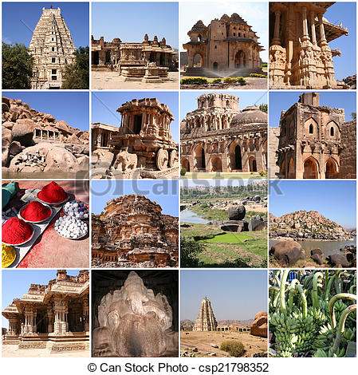
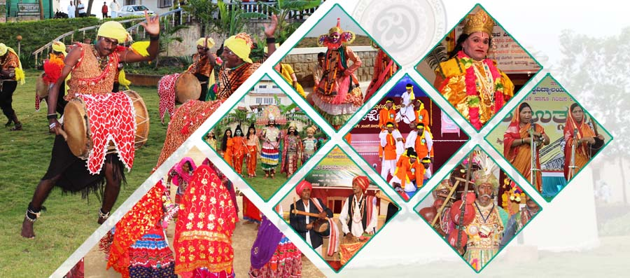

Karnataka is a state in the south western region of India. It was formed on 1 November 1956, with the passage of the States Reorganisation Act. Originally known as the State of Mysore, it was renamed Karnataka in 1973. The state corresponds to the Carnatic region. The capital and largest city is Bangalore. Karnataka is bordered by the Arabian Sea to the west, Goa to the northwest, Maharashtra to the north, Telangana to the northeast, Andhra Pradesh to the east, Tamil Nadu to the southeast, and Kerala to the south. The state covers an area of 191,976 square kilometres (74,122 sq mi), or 5.83 percent of the total geographical area of India. It is the sixth largest Indian state by area. With 61,130,704 inhabitants at the 2011 census, Karnataka is the eighth largest state by population, comprising 30 districts. Kannada, one of the classical languages of India, is the most widely spoken and official language of the state alongside Urdu, Konkani, Marathi, Tulu, Tamil, Telugu, Malayalam, Kodava and Beary. Karnataka also contains some of the only villages in India where Sanskrit is primarily spoken
The diverse linguistic and religious ethnicities that are native to Karnataka, combined with their long histories, have contributed immensely to the varied cultural heritage of the state. Apart from Kannadigas, Karnataka is home to Tuluvas, Kodavas and Konkanis. Minor populations of Tibetan Buddhists and tribes like the Soligas, Yeravas, Todas and Siddhis also live in Karnataka. The traditional folk arts cover the entire gamut of music, dance, drama, storytelling by itinerant troupes, etc. Yakshagana of Malnad and coastal Karnataka, a classical dance drama, is one of the major theatrical forms of Karnataka. Contemporary theatre culture in Karnataka remains vibrant with organisations like Ninasam, Ranga Shankara, Rangayana and Prabhat Kalavidaru continuing to build on the foundations laid by Gubbi Veeranna, T. P. Kailasam, B. V. Karanth, K V Subbanna, Prasanna and others.[114] Veeragase, Kamsale, Kolata and Dollu Kunitha are popular dance forms. The Mysore style of Bharatanatya, nurtured and popularised by the likes of the legendary Jatti Tayamma, continues to hold sway in Karnataka, and Bangalore also enjoys an eminent place as one of the foremost centres of Bharatanatya